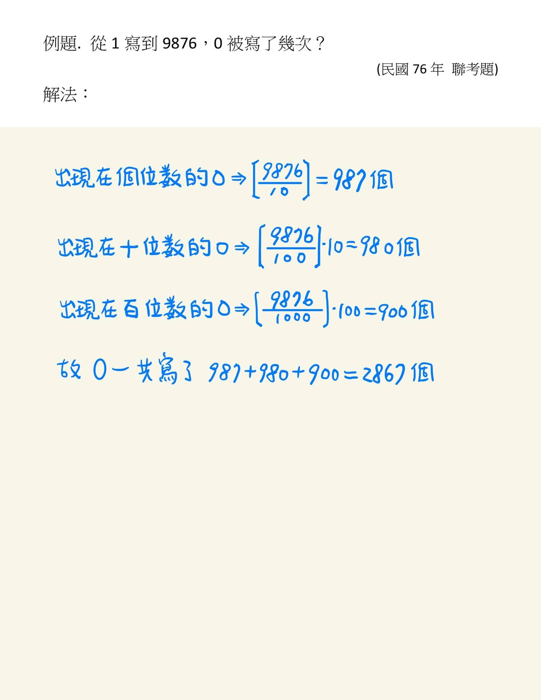
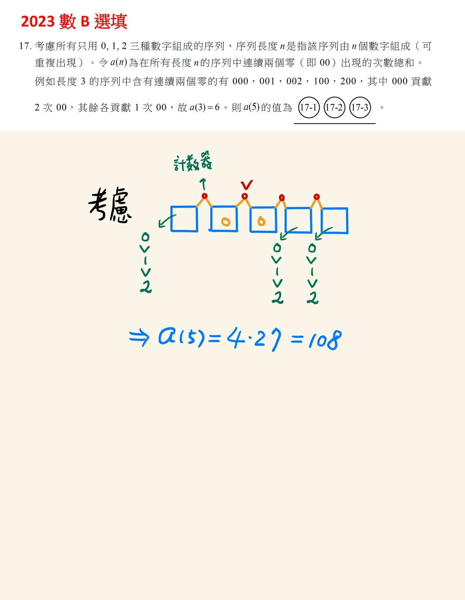
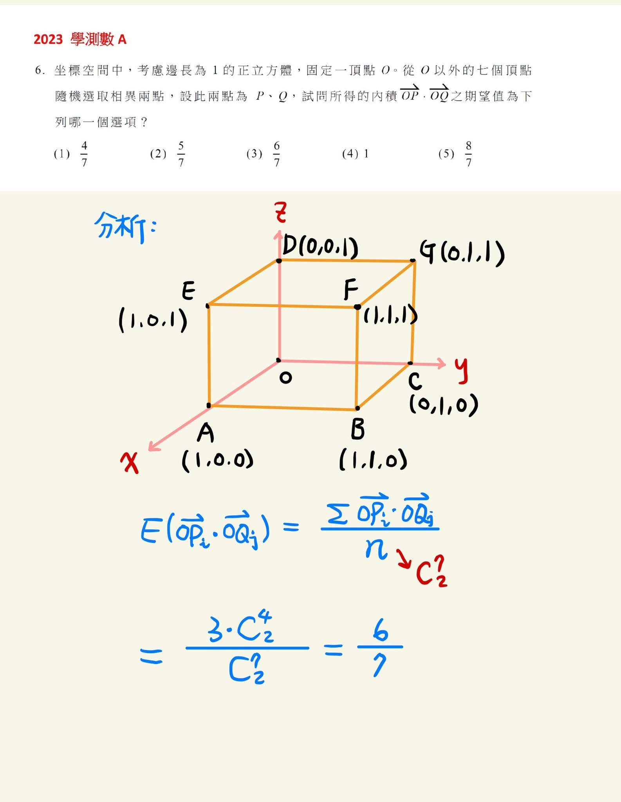

獵豹教你如何在學測數學拿滿級分—巧用期望值線性性質
宗翰老師在多次的演講與撰文中指出：「立體幾何」與「組合學」是台灣學生的軟肋。
而這兩部分正是獵豹數學教學的重點。
以今年（2023）學測A卷答對率明顯偏低的P6為例，這道立體幾何題甚至打擊了許多平常以數學高手自詡的同學信心。
我們看了網路上與各大補習班老師在講解這題目與B卷P17解法後，不難理解學生們為何在這兩題上栽了跟斗。
因爲許多人（老師與學生）都沒把組合學中的「計數原理」與「期望值」的觀念融會貫通。
*靈活地運用「期望值的線性性質」，可以將許多繁複的計數問題大幅簡化！
宗翰老師在之前的直播課程時，便示範了如何利用期望值的線性性質 神奇地解決了AMC8,10,12,AIME的一連串問題，甚至貫穿Putnam競賽題（全美最著名的大學數學競賽）！
A卷的P6 有別於其他老師由解析幾何入手依照定義分類討論，宗翰老師以組合學的角度四兩撥千斤，輕鬆妙解。
他也用使用了相同的觀念，秒解了B卷最難的P17。
而這兩道題的觀念竟然與1987年的聯考壓軸題系出同源！
宗翰老師的說明，真是讓人有「千年暗室 一燈即明 」恍然大悟！
目前開放索取 獵豹高手秒解112學測數學壓軸題 筆記
🎯欲索取 兩小時完整 宗翰老師親授
獵豹高手秒解112學測數學壓軸題～解難題的速度不在熟練而在「觀點」！
申請 錄播課+課後筆記，請見


